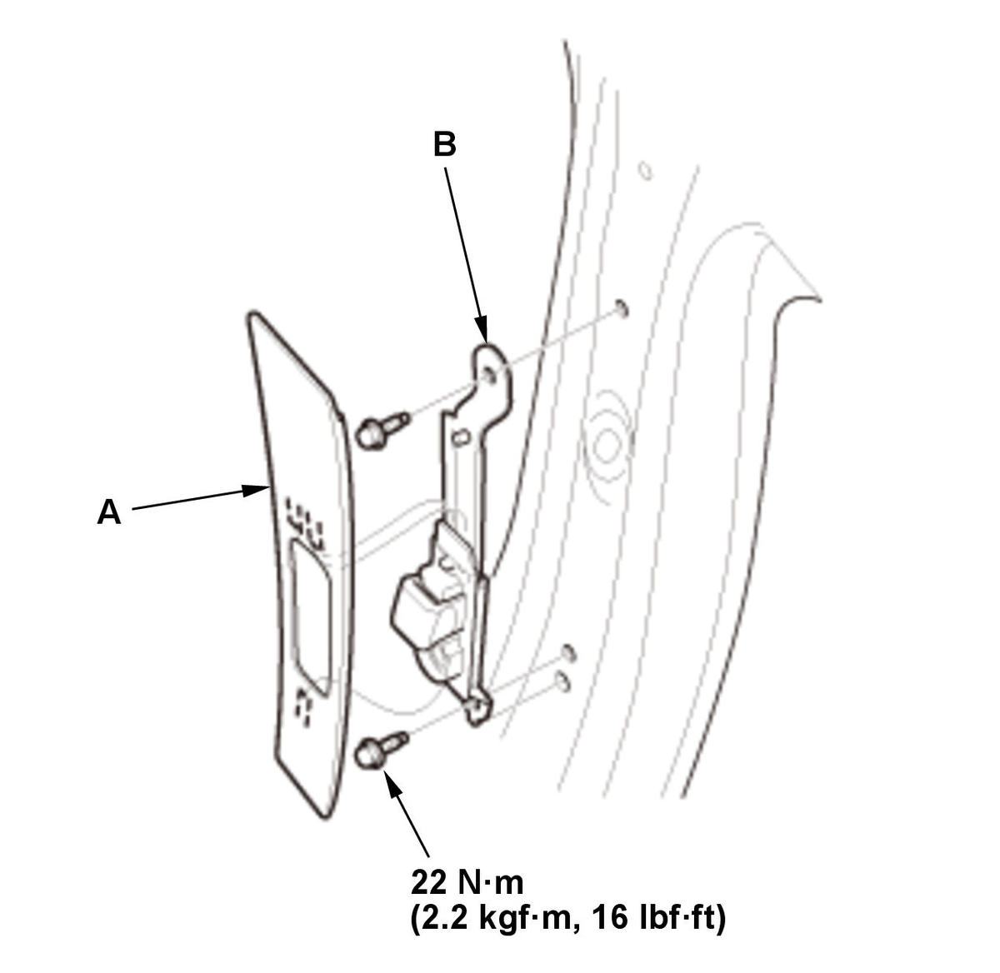

Removal and Installation
- B-Pillar Upper Trim - Remove
- Shoulder Anchor Adjuster - Remove

Courtesy of HONDA, U.S.A., INC.1. Remove the cover (A). 2. Remove the shoulder anchor adjuster (B).
- All Removed Parts - Install
1. Install the parts in the reverse order of removal.